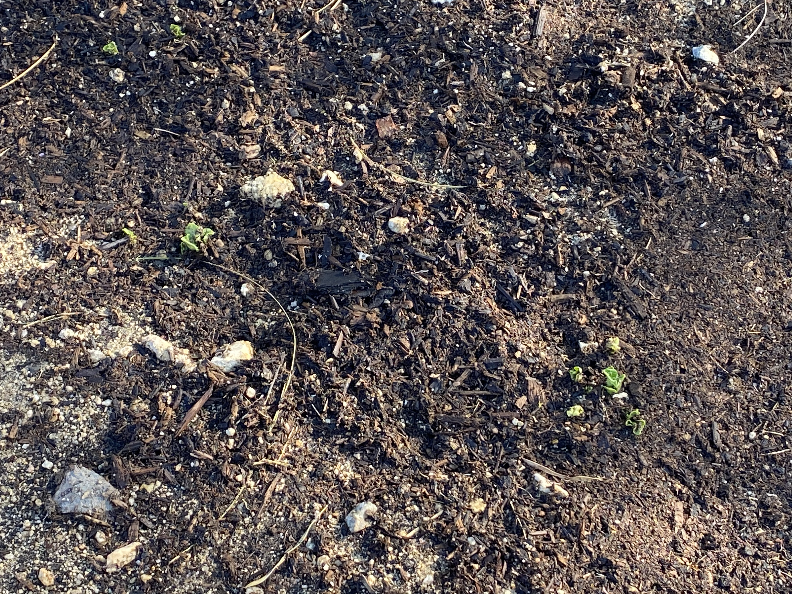
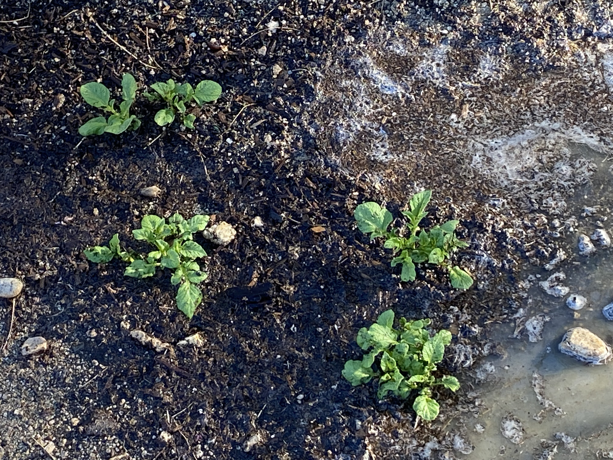

POTATOES by TEA and Marcus
June 5, 2020
It all started as an experiment. Tyler watched a video on farming in India, and discovered a technique to retain water in extreme drought.

Depth is 1 foot down and the berries are two feet high. We mixed potting soil with the regular soil of the earth. As far as we understand, water is retained in ground better by lowering the level of ground and raising barrier on three sides so that the water is directed to the said area.
June 12/June 16, 2020


It’s been about a week or so and we started seeing the potatoes sprouting. They grow really fast.
June 18, 2020

Potatoes on the right half of the farm started growing.